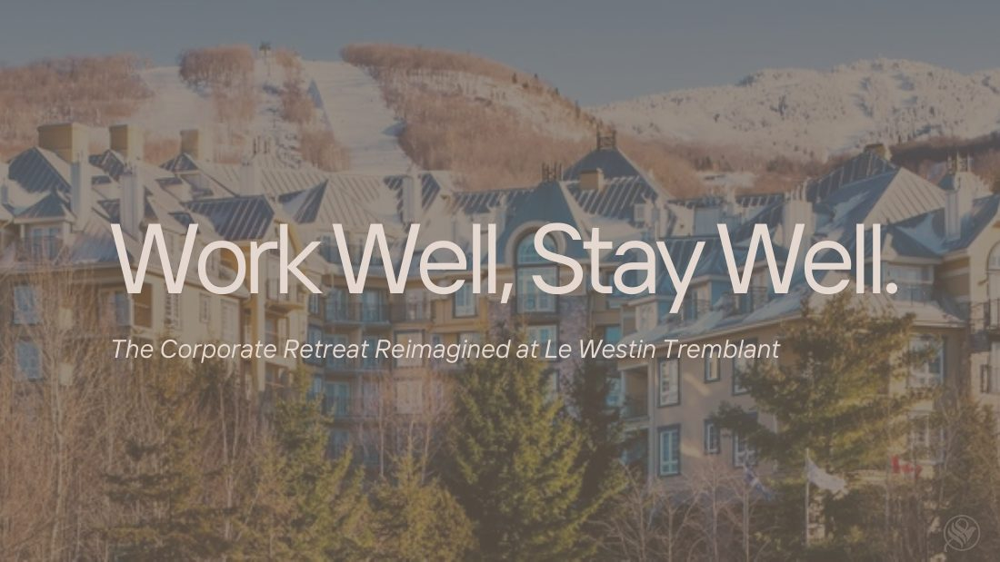

A strategy to reimagine Le Westin Tremblant as a corporate retreat destination by combining productivity, wellness and nature.
View full presentation ↗
The mandate was to increase Sunday-Thursday off-season occupancy and strengthen Le Westin Tremblant's visibility as a wellness-focused hotel.
The strategy reframed the property for corporate travellers, with the objective of making it a preferred Mont-Tremblant business retreat and driving midweek bookings.
Work Well, Stay Well.
The Corporate Retreat Reimagined at Le Westin Tremblant.
Yoga, forest walks, healthy meals, wellness programming and light meeting space for teams seeking rest and reconnection.
Meeting space, productivity-focused catering and optional workshops or team activities designed around focused collaboration.
Executive meeting environments, leadership programming and networking experiences supported by wellness elements.
Local wellness, nature and leadership partners strengthen the retreat experience and expand the offering.
A B2B channel selected to target corporate roles directly and support measurable group-sales activity.
A curated two-day experience designed to introduce the packages to corporate decision-makers and generate future bookings.
The concept uses Westin's wellness positioning, renovated meeting spaces and access to nature to create packaged retreats for small-to-mid-sized corporate groups.
The full presentation also maps the customer journey, competitive landscape, implementation roadmap, costs and risks.
← Back to selected work